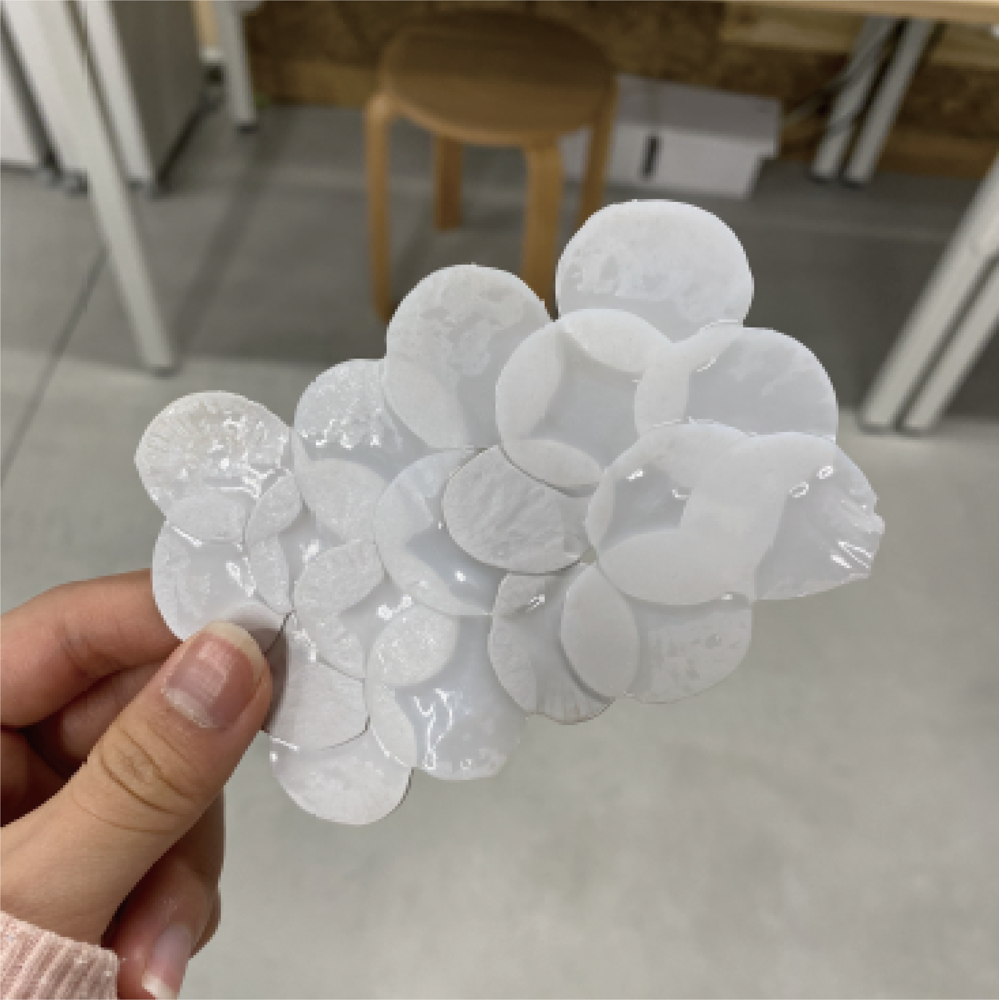
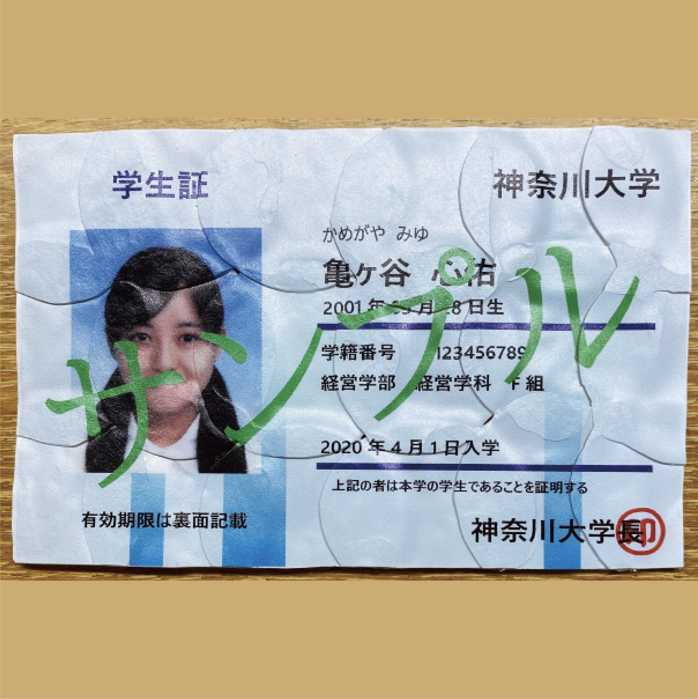
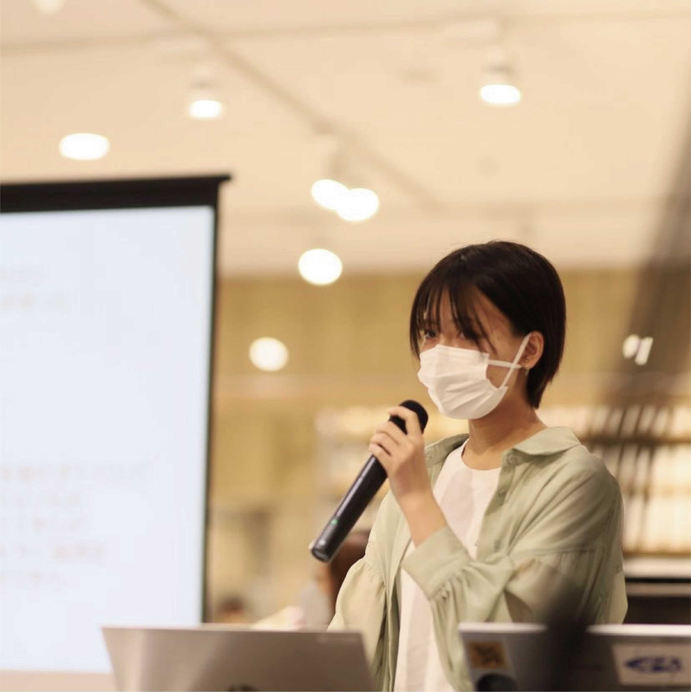
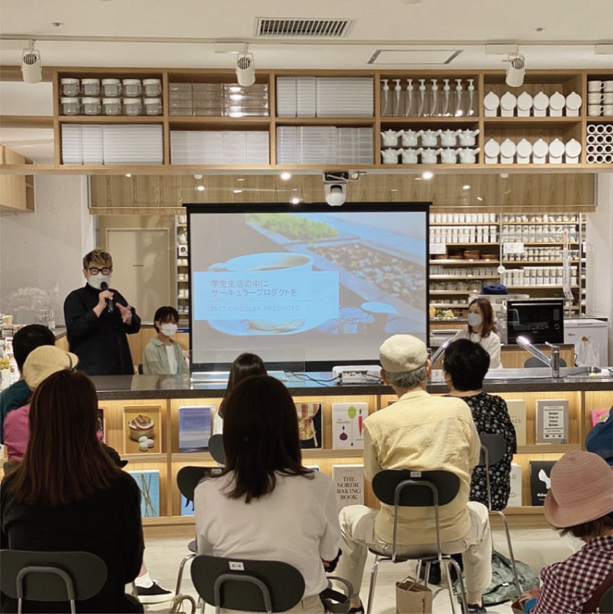
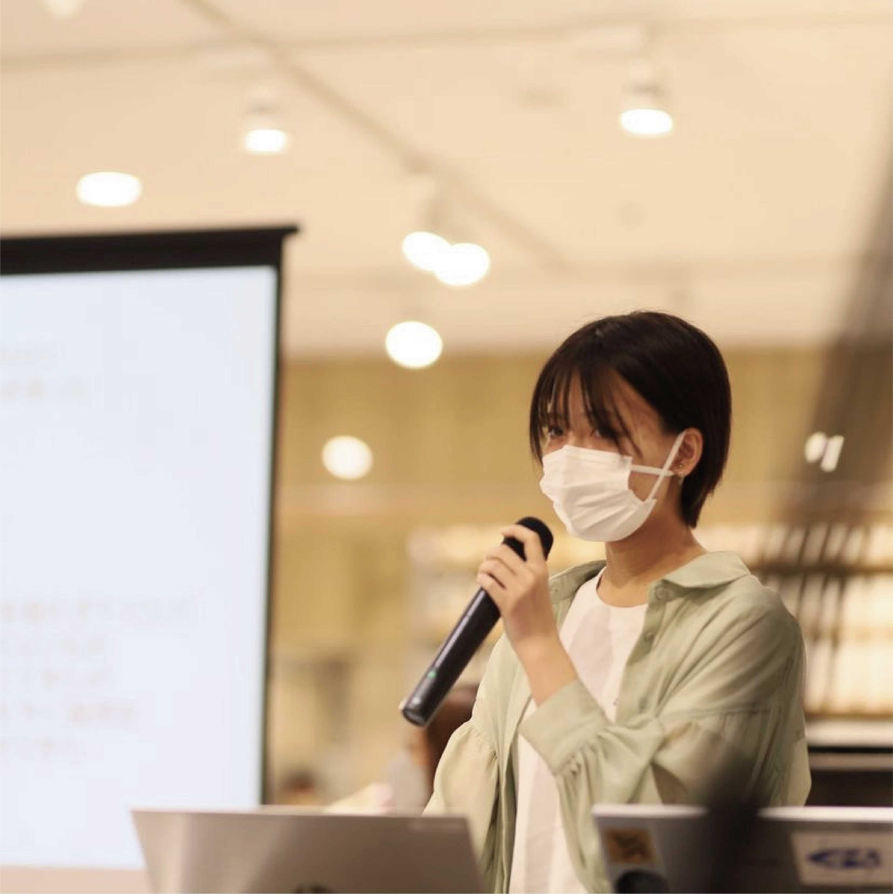
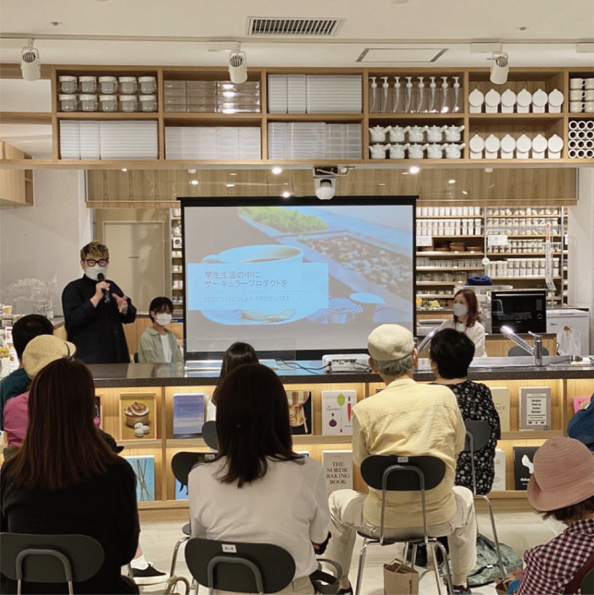

Student card
2021
Illustrator / UV printer

チーム作品「学生証」
大2の夏休みに同じゼミの後輩と共に「プラスチックのゴミから学生証を作る」という活動を行った。リーダーとして約2ヶ月の間まるで本物のように使用できる学生証の制作を行ったのだが、今回の活動ではコービーやガムシロップのケースのゴミを使用した。ペットボトルのゴミではなくケースのゴミを使用した理由には、学生にとってより身近なものから制作することで日々の生活の中で「リサイクル」という言葉を身近に感じてもらいたいと考えたためである。
主な制作方法はケースの縁の部分を切り取り、プレスし、レンジで熱し板状にしたものを重ねて再度熱し、学生証の大きさにカットするというものである。最後にUVプリンターで色付けをすれば下記の画像のように本物の学生証のようなカードとなる。


制作終了後様々な企業様の前でプレゼンをさせていただくと共に、神奈川大学SDGsアワードにおいて「神奈川県民共済生活協同組合賞」をいただくことができた。また、後日無印良品港南台バーズ店で行われたリアルアイデアパークトークイベントにおいてプレゼンテーションをさせていただいた。
 



完成した動画はこちら→https://d.kuku.lu/15e3b31db